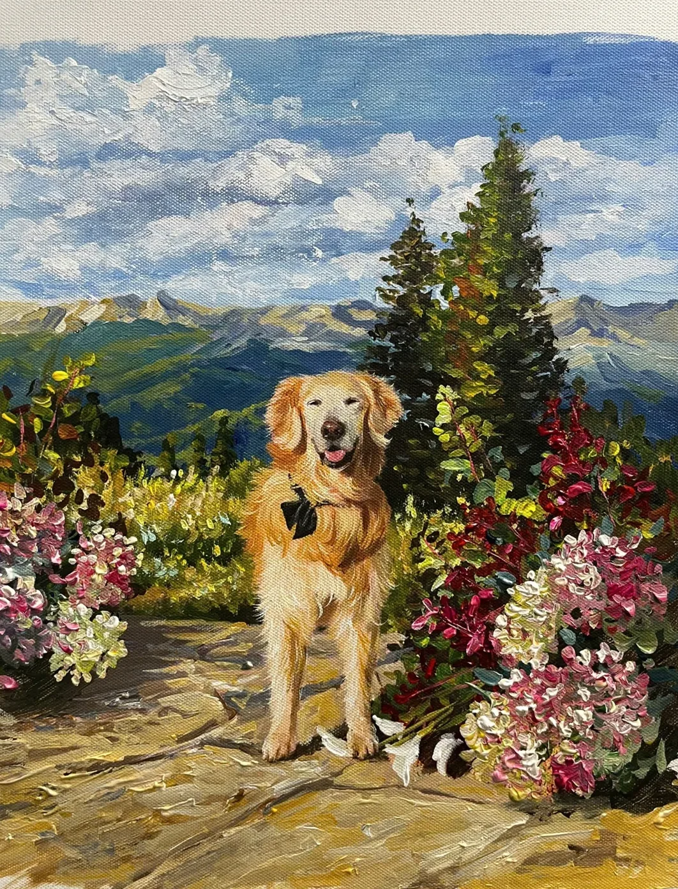
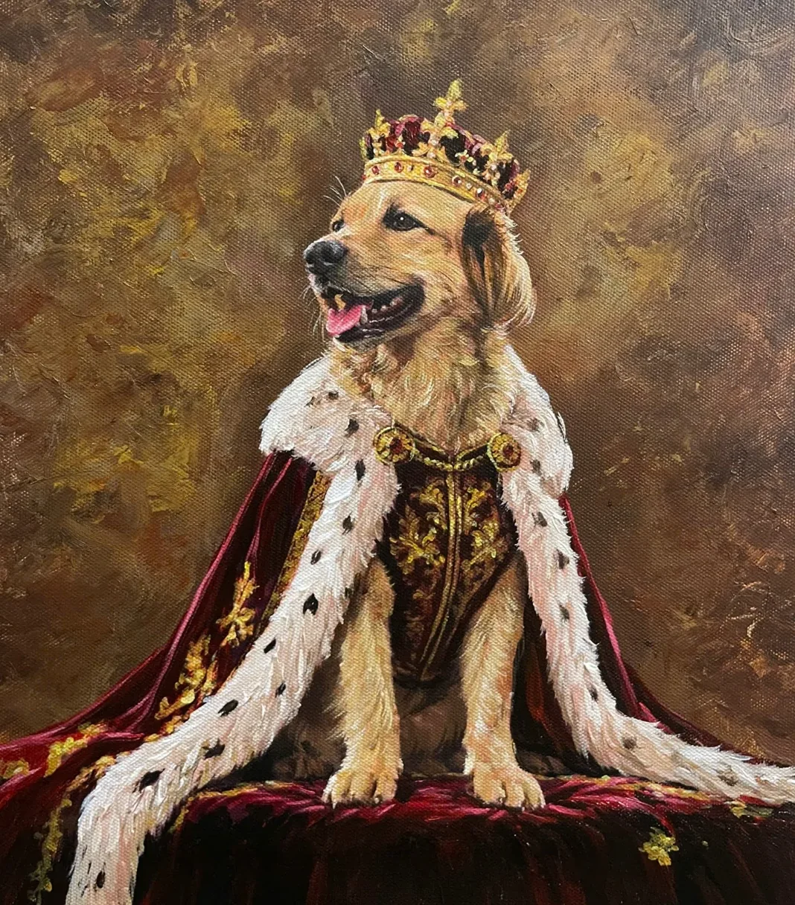
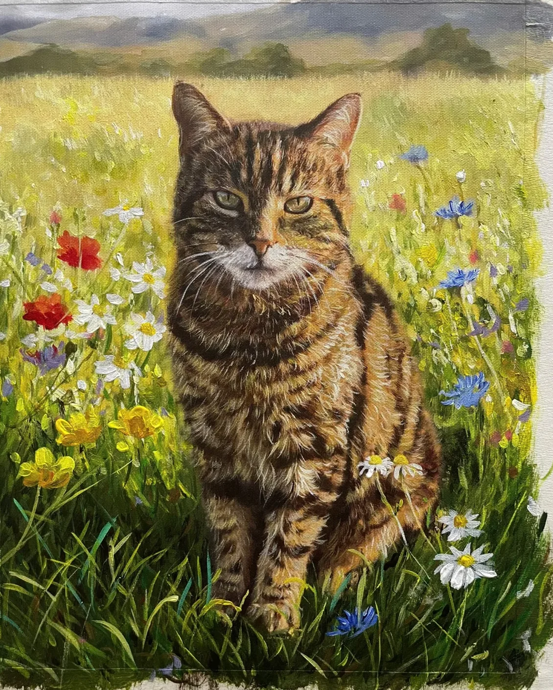
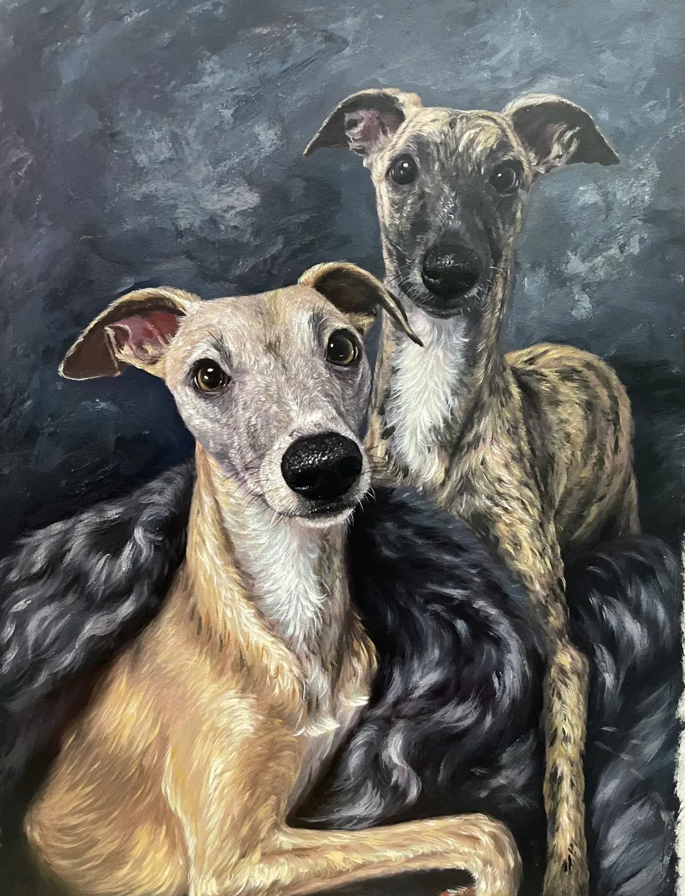
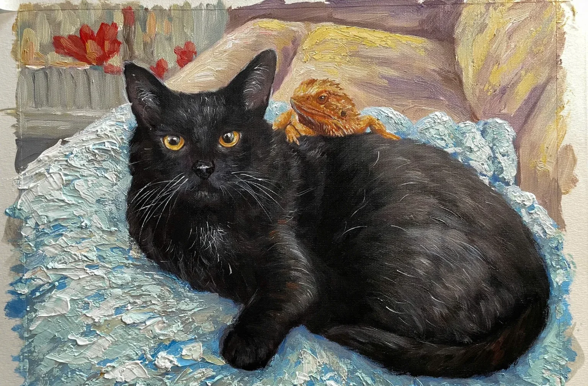

How to choose the best photo for your pet portrait
Lighting, expression and the little details that help us paint their character.
READ THE PHOTO GUIDE




For the little souls who make a house feel like home. Original oil paintings, created entirely by hand from the photographs you hold dear.
COMMISSION YOUR PORTRAITSome companions are simply impossible to forget. We create original oil portraits to celebrate the details that make them unforgettable.
Every gesture of the brush, every layered colour, every familiar expression. A one-of-a-kind painting made to be lived with for years to come.
DISCOVER OUR PROCESS
From a playful glance to a quiet moment, we work from your favourite photographs to honour what makes them yours.
MAKE IT PERSONALFind the right size and composition for your companion.
Send photographs and the details that make them unique.
Your original painting is made by hand and carefully prepared for delivery.
ATELIER HAU is an independent portrait studio based in Ho Chi Minh City, Vietnam, welcoming commissions from Australia and other eligible international destinations. Each original oil portrait is created from your photographs, with a clear ordering process and secure PayPal checkout.
Questions before you order? Email hello@atelierhau.com, explore how commissions work, or review our commission and delivery policies.
CHOOSE YOUR PORTRAITHelpful answers as you choose a portrait that feels like your pet.
Lighting, expression and the little details that help us paint their character.
READ THE PHOTO GUIDEUnderstand the difference between an original hand-painted canvas and a digital print.
EXPLORE THE DIFFERENCESEvery commissioned portrait is painted by hand in oils on canvas. It is not a digital print. Compare oil paintings with digital portraits.
Yes. Your favourite photographs are the starting point for your custom portrait. We can discuss which image will work best. Read our guide to choosing a pet portrait photo.
Yes. Choose the number of pets in the commission form to see the available options and estimated price.
We welcome international enquiries. Shipping eligibility, timing and any applicable import charges are confirmed for your destination before payment.
Of course. Use our contact form and we'll reply by email to discuss your portrait.